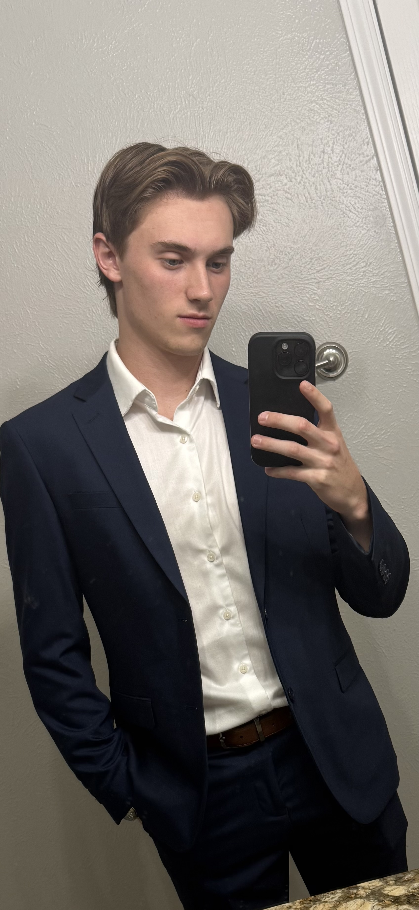

Full Stack Developer
"How you do anything, is how you do everything" Zen Buddhism. I bring that mindset to everything I do in life, and I give my full effort to deliver work that is thoughtful, consistent, and built with care.
I’m Tyson Ward-Dicks, a collaborative and dependable teammate who enjoys helping people bring ideas to life. I’m known for clear communication, steady follow-through, and keeping projects organized so everyone feels confident about the next step.
Whether I’m working with a professor, a client, or a team, I focus on making the process smooth and the outcome something we can all be proud of. I care about building trust, setting expectations early, and delivering work that reflects care, consistency, and respect for the people using it.

"How you do anything, is how you do everything" Zen Buddhism. I bring that mindset to everything I do in life, and I give my full effort to deliver work that is thoughtful, consistent, and built with care.
Explore the sections of my portfolio below for projects, documents, education, and ways to connect.